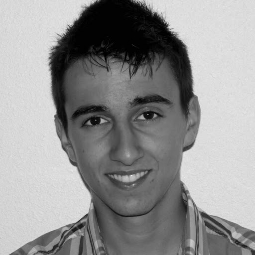

Benjamin Bernard-Bouissières
Mon CV
Site de l'iut Lyon 1
Voir le site 
À propos de moi

Me voici en quelques chiffres :
- Né le 29 janvier 1996 (19 ans)
- 1m75
- 63 kg
- 7 ans de Basketball en club
- 8 heures et 42 minutes pour programmer ce site
Mon CV
Expérience
Animateur Sportif au Ecole des Sports Saint-Priest
octobre 2013 - Poste actuel (1 an 3 mois)Actuellement animateur pour l'Eveil Sportif de la ville de Saint-Priest.
J'encadre des enfants de 4 à 6 ans avec des activités ludiques autour d'un sport (jeux d'opposition, jeux de ballons, expression corporelle,...)
J'encadre des enfants de 4 à 6 ans avec des activités ludiques autour d'un sport (jeux d'opposition, jeux de ballons, expression corporelle,...)
Animateur au Centre de loisirs Marcel Moiroud (Mions)
août 2014 - août 2014 (1 mois)Job d'été
Formation
Université Claude Bernard Lyon 1
2014 - 2016Activités et associations : Membre du club robotique, membre du club sport
Lycée Condorcet
Baccalauréat, Science de l'ingénierie, 2010 - 2014
Activités et associations : Membre de la Maison des lycéen, Basketball et Volleyball à l'AS.
Activités et associations : Membre de la Maison des lycéen, Basketball et Volleyball à l'AS.
Compétences et expertise
- Animation
- Video Editing
- Computing
- Informatique
- Teamwork
- Programming
- English
- Microsoft Office
Langues
- Anglais (Capacité professionnelle complète)
- Espagnol (Compétence professionnelle limitée)
- Français (Bilingue ou langue natale)
Expériences de volontariat
Animateur Événements , ALSP Basket
janvier 2013 - Poste actuel (2 ans)Création de vidéos pour le club (teaser, highlights, game recap) mais également gestion du son et de la
lumière lors des matchs de N3/N2.
Centres d'intérêt
Basketball, Informatique, Musique, Lecture, Snowboard, Danse, Montage vidéo, Programmation
Résumé
Je suis un amoureux du sport mais j'aime tout autant l'informatique dans lequel je voudrai m'engager
professionnellement.
L'animation en centre de loisir est pour moi une manière de partager mes valeurs sportives (dans le cadre de l'Ecole des Sports) ou non.
L'animation en centre de loisir est pour moi une manière de partager mes valeurs sportives (dans le cadre de l'Ecole des Sports) ou non.